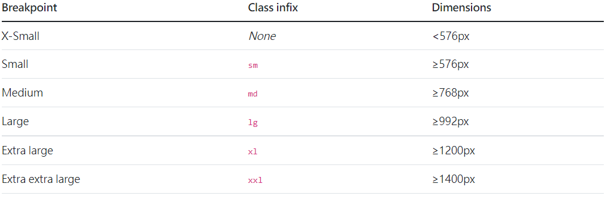

【學習日誌】Bootstrap進階語法
排版常用語法
在CSS中常用的margin,padding可用以下語法表示:
property 設定:
m - 設定 margin 的類別
p - 設定 padding 的類別
sides 設定:
t - 設定 margin-top 或是 padding-top 的類別
b - 設定 margin-bottom 或是 padding-bottom 的類別
s - (start) 在 LTR 設定 margin-left 或是 padding-left， RTL 設定 margin-right 或是 padding-right
e - (end) 在 LTR 設定 margin-right or padding-right， RTL 設定 margin-left 或是 padding-left
x - 同時設定 *-left 和 *-right
y - 時設定 *-top 和 *-bottom
blank - 同時設定 margin 或 padding 在元素的四個邊緣
size 設定:
0 - 設定 margin 或是 padding 為 0
1 - (預設) 設定 margin 或是 padding 為 $spacer * .25
2 - (預設) 設定 margin 或是 padding 為 $spacer * .5
3 - (預設) 設定 margin 或是 padding 為 $spacer
4 - (預設) 設定 margin 或是 padding 為 $spacer * 1.5
5 - (預設) 設定 margin 或是 padding 為 $spacer * 3
auto - 設定 margin 為 auto
flex 相關
.flex-row 設定水平的方向(瀏覽器預設值)
.flex-row-reverse 作水平方向的反轉
.flex-column 設置垂直方向
.flex-column-reverse 作垂直方向的反轉。
.justify-content 改變 flex 物件在主軸上的對齊(x 軸開始，如果 flex-direction: column 則為 y 軸)
1 | |
.align-items 改變橫軸上 flex 物件的對齊 (y 軸開始，如果設定 flex-direction: column 則為 x 軸)
1 | |
.align-self 通用類別單獨改變在橫軸上的對齊 (y 軸開始，如果設定 flex-direction: column，則為 x 軸)
.flex-nowrap 完全不換行 (瀏覽器預設)
.flex-wrap 進行換行
.flex-wrap-reverse 進行反向換行
中斷點
Bootstrap 預設默認六個斷點（有時候會稱之為網格），主要用於建立響應式開發

其中比較常用的為 md(大部分手機板型) , lg(大部分桌面板型)
響應式網頁製作通常以手機版為基準，再加入桌面版響應條件
本部落格所有文章除特别聲明外，皆歡迎轉載並註明出處。